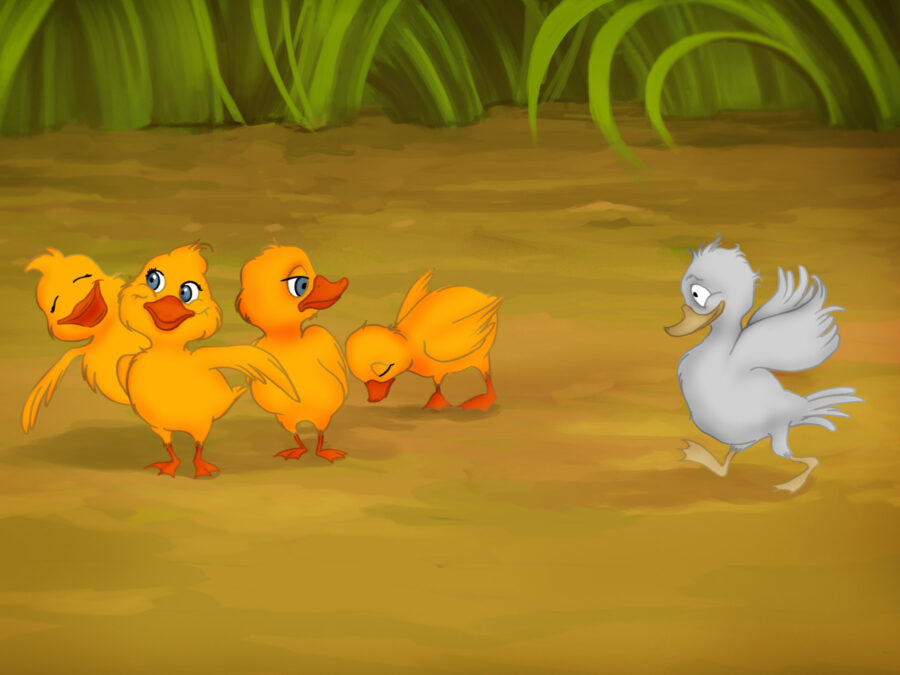
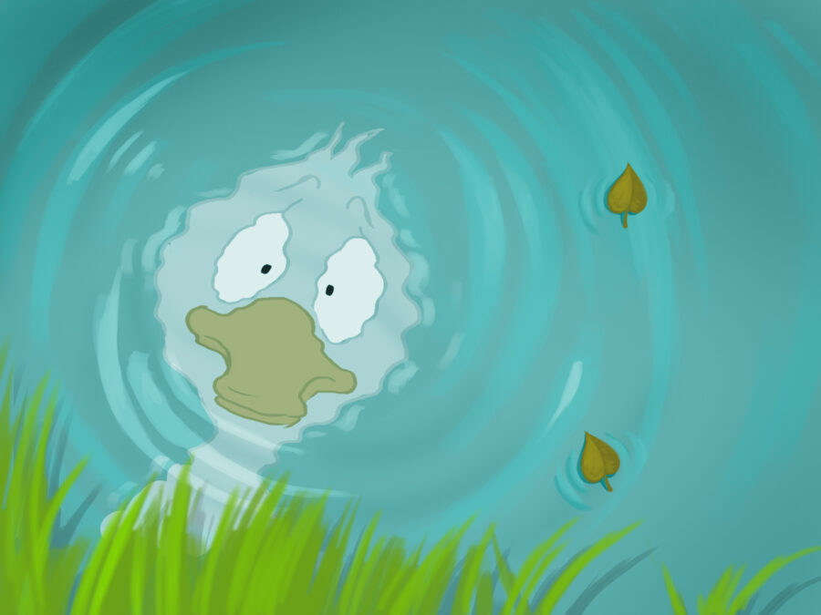
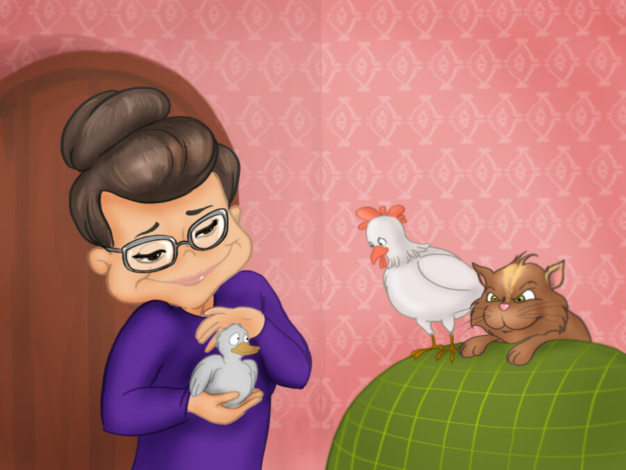
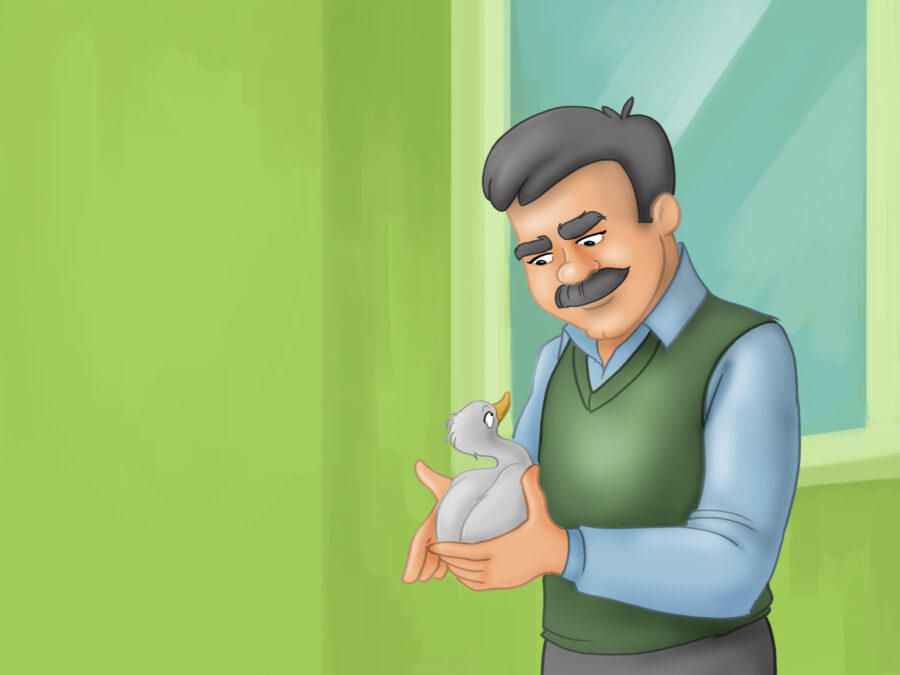
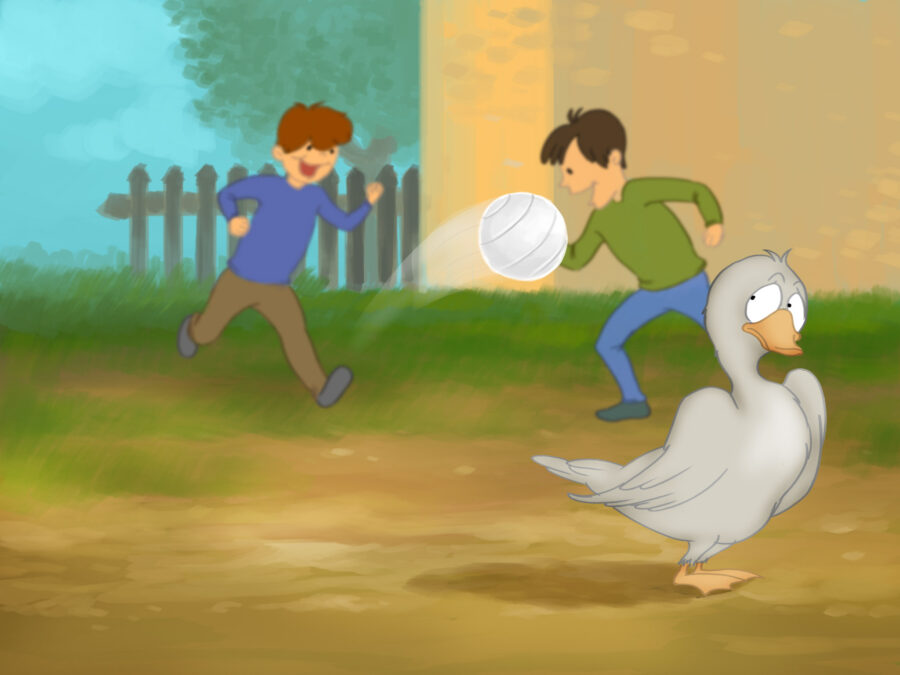
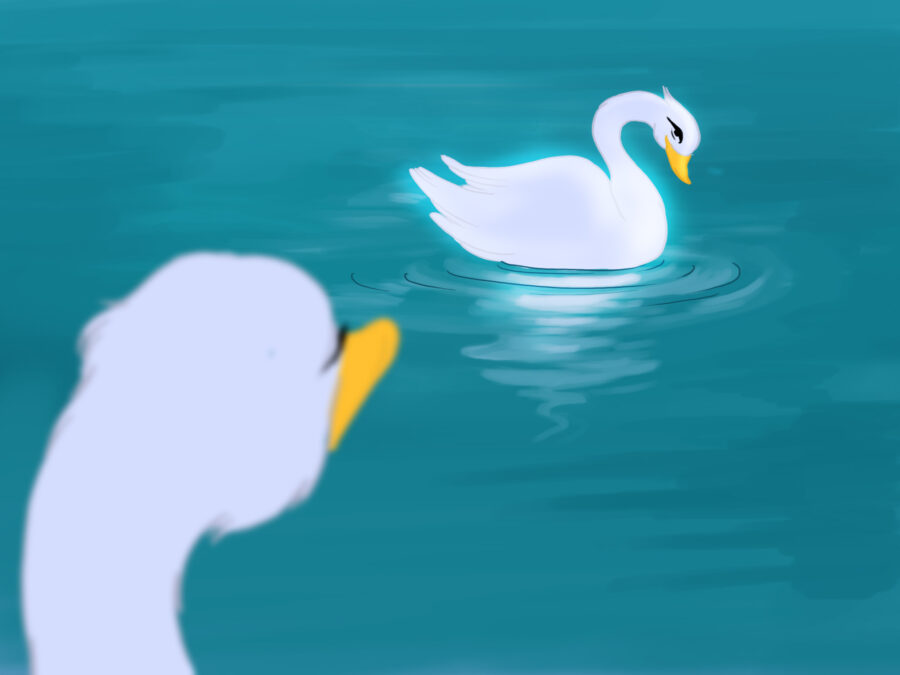
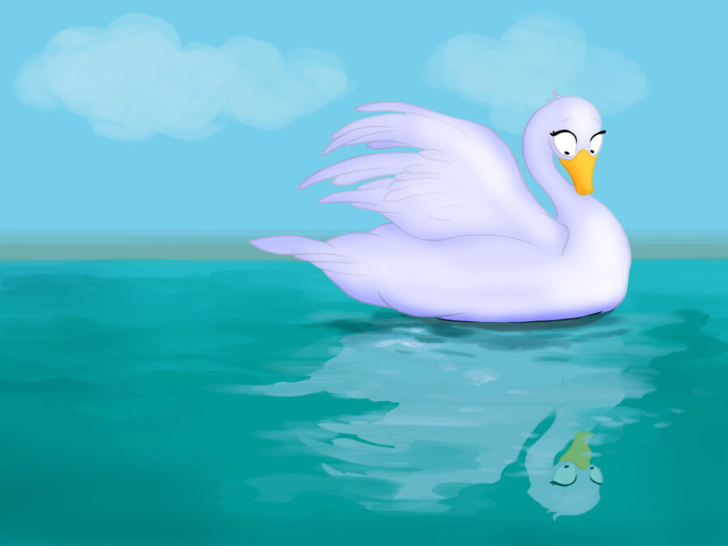
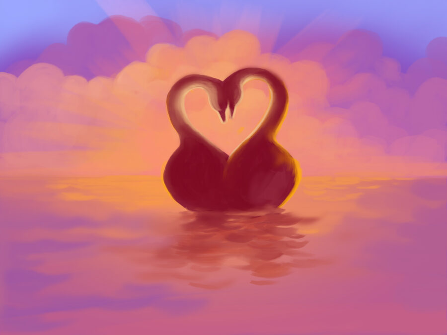

One hot summer's day a mother duck's eggs began to crack and hatch, and little ducklings started appearing through the shells one after another. "Cheep cheep," they cried. But one of the ducklings was different.
This cheerful little duckling eagerly participated in all the games his siblings were enjoying. Unfortunately, they didn't want to include him in their playtime.
He failed to grasp why he was unpopular, until one afternoon he caught sight of his image in the water. "I am so unattractive! That must be the reason no one cares for me," the duckling concluded and chose to leave his home.
He departed from his house and began his journey. During his travels, he encountered a woman who brought him to her home and offered him food. However, her cat and hen were unkind to the duckling, prompting him to leave the woman's residence.
As winter arrived, the duckling found himself all by himself and shivering with cold, until a man spotted him and brought him home.
The man was kind to him, but his kids frightened the duckling. They would leap around and yell everywhere, which caused him to flee.
Finally, spring came, and the duckling was overjoyed to be able to swim once more. One afternoon, while he was paddling in the water, he noticed a stunning swan in the lake and instantly fell for her.
However, the duckling remembered that he was very ugly, and at this thought, he bowed his head down in sadness. But what did he see in his reflection? Over the winter he had turned into a very handsome young swan!
"I see it clearly now! My siblings are all ducklings, but I am a swan," he reflected and pursued the majestic swan. Before long, they wed and lived joyfully ever after.
Thank you for reading the story! Hope you understood it.
Let’s Test your Understanding?
Yes
No
Reference: https://taleswithgigi.com/the-ugly-duckling/